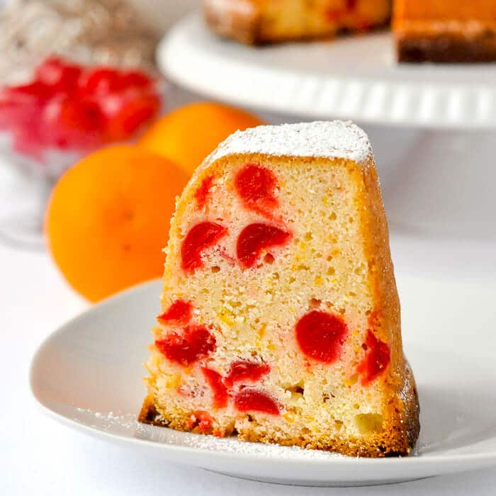
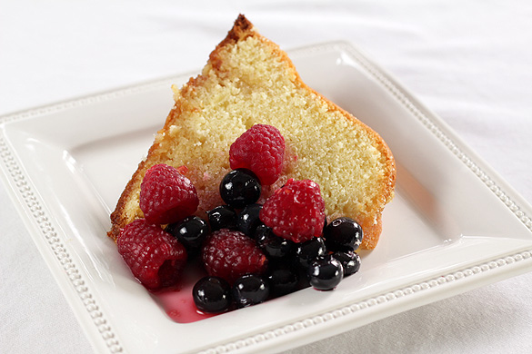
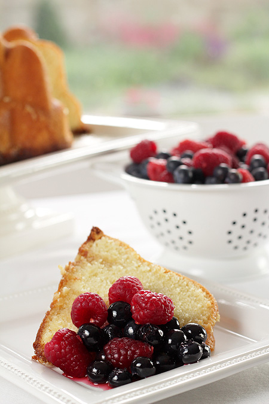

Date added: 05 Jan
Until recently, I had never made really good plain pound cake. I have delicious lemon pound cake, raspberry swirl pound cake, and brown butter pound cake in my back pocket, but regular pound cake has always been a disappointment. It was so hard for me to tackle this recipe because pound cake can easily turn out dry, rock solid, and/or lacking flavor.
But then I began adding cream cheese and sour cream to the cake batter. And my long history of pound cake disappointments began fading away.
Today I’m teaching you how to make my favorite cream cheese pound cake in a Bundt pan. I’m confident this is the best pound cake and I’m showing you exactly why:
- Very buttery & very moist
- Not dry
- 1 bowl recipe
- Only 9 basic ingredients
- Dense, but not heavy as a brick
- Soft & smooth crumb
- A little tang from cream cheese
- Sweet & vanilla flavored
You can easily halve this recipe for a loaf pan or try my mini pound cakes recipe.
Cream Cheese Pound Cake Ingredients
Here are the ingredients for cream cheese pound cake and why each is used.
- Butter: Butter is the base of pound cake. You need 3 sticks of properly softened butter.
- Cream cheese: Cream cheese is the difference between dry pound cake and moist pound cake. End of story. If you’ve experienced dry pound cake before, cream cheese will solve all those problems. I swear by it and you will too!
- Sugar: This is a very large cake, so a lot of sugar is required to sweeten the cake and properly cream all the butter and cream cheese. 2 and 1/2 cups seems like a lot, but remember this cake is heavy and yields many servings.
- Sour Cream: Sour cream is an unconventional ingredient in pound cake, but it adds so much moisture. We are avoiding dry pound cake as much as we can!
- Vanilla Extract & Salt: Both are used for flavor. See recipe notes for more flavors.
- Eggs: Eggs are the workhorse of pound cake– the main ingredient carrying all the weight. You can’t make pound cake without eggs.
- Cake Flour: Cake flour is lighter than all-purpose flour and produces the best pound cake in my opinion. Since it’s so light, the attention remains on the butter. All-purpose flour is simply too heavy for this pound cake recipe; the cake will be heavy as a brick. If needed, use this homemade cake flour substitute.
- Baking Powder: Baking powder is another unconventional ingredient in pound cake. I don’t use much for this amount of batter, but the small amount lightly lifts the crumb so the cake isn’t overly heavy and squat.
Each ingredient is important and has a very specific job!

How to Make Cream Cheese Pound Cake
Now that you know what can go wrong, let’s talk about how to make the most perfect cream cheese pound cake. The *TRICK* is a lot of mixing before you add the eggs.
- Mix, mix, mix: Beat the butter until creamy. Add the cream cheese, then beat the two until smooth. Get all the cream cheese lumps out. Beat in the sugar, then add the sour cream and vanilla. So far there’s been a lot of mixing and that’s ok!
- 1 egg at a time:Add the eggs 1 at a time, making sure each is incorporated before adding the next. When the eggs are room temperature, the mixer only needs a few turns and won’t over-mix them. Over-mixed batter = heavy-as-a-brick cake.
- Add dry ingredients:Add the dry ingredients right into the same mixing bowl.
- Pour into pan: Pour the batter into a generously greased 10-12 cup Bundt pan. This is totally not sponsored, but I absolutely adore Nordic Ware Bundt pans. Make sure you use one that holds 10-12 cups of batter. This one is also gorgeous!
- Bake: Bake the cream cheese pound cake at 325°F (163°C). Halfway through baking, loosely tent the cake with aluminum foil to prevent over-browning.
- Cool, then invert:Let the pound cool for about 2 hours in the pan, then invert onto a serving plate and cool completely before serving.
Serve with whipped cream, fresh berries, strawberry topping sauce, and/or homemade lemon curd. There’s a simplistic beauty about pound cake– it doesn’t need glaze, frosting, bells, or whistles.

